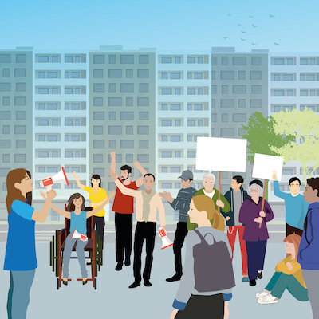
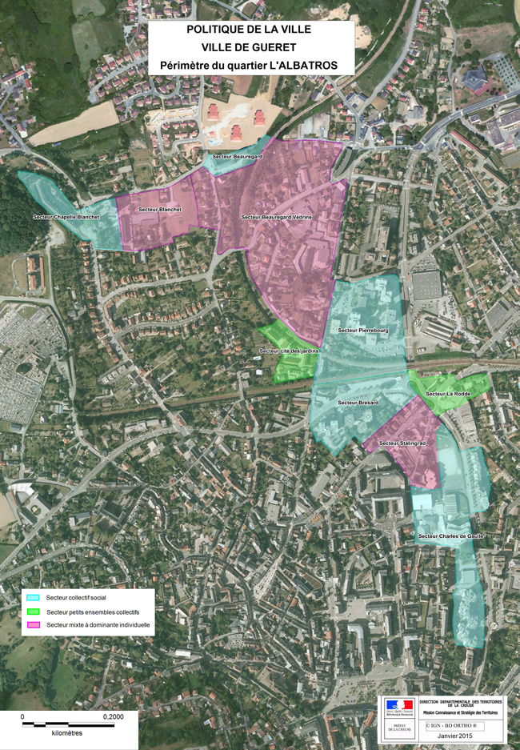

La loi n° 2014-173 du 21 février 2014 a précisé le nouveau cadre de la compétence "politique de la
ville" :
« La politique de la ville est une politique de cohésion urbaine et de solidarité, nationale et locale,
envers les quartiers défavorisés et leurs habitants. Elle est conduite par l'Etat, les collectivités
territoriales et leurs groupements dans l'objectif commun d'assurer l'égalité entre les territoires, de
réduire les écarts de développement entre les quartiers défavorisés et leurs unités urbaines et d'améliorer
les conditions de vie de leurs habitants. [...] »
I\ Lutter contre les inégalités de tous ordres, les concentrations de pauvreté et les
fractures
économiques, sociales, numériques et territoriales ;
II\ Garantir aux habitants des quartiers défavorisés l'égalité réelle d'accès aux
droits, à l'éducation,
à la culture, aux services et aux équipements publics ;
III\ Agir pour le développement économique, la création d'entreprises et l'accès à
l'emploi par les
politiques de formation et d'insertion professionnelles ;
IV\ Agir pour l'amélioration de l'habitat ;
V\ Développer la prévention, promouvoir l'éducation à la santé et favoriser l'accès aux
soins ;
VI\ Garantir la tranquillité des habitants par les politiques de sécurité et de
prévention de la
délinquance ;
VII\ Favoriser la pleine intégration des quartiers dans leur unité urbaine, en
accentuant notamment leur
accessibilité en transports en commun, leur mixité fonctionnelle et urbaine et la mixité de leur composition
sociale ; elle veille à ce titre à la revitalisation et la diversification de l'offre commerciale dans les
quartiers prioritaires de la politique de la ville ;
VIII\ Promouvoir le développement équilibré des territoires, la ville durable, le droit
à un
environnement sain et de qualité et la lutte contre la précarité énergétique ;
IX\ Reconnaître et valoriser l'histoire, le patrimoine et la mémoire des quartiers
;
X\ Reconnaître et valoriser l'histoire, le patrimoine et la mémoire des quartiers
;
Concourir à l'égalité entre les femmes et les hommes, à la politique d'intégration et à la lutte contre
les discriminations dont sont victimes les habitants des quartiers défavorisés, notamment celles liées au lieu
de résidence et à l'origine réelle ou supposée.
En juin 2014, Guéret fait officiellement son entrée en politique de la ville. Le quartier prioritaire
défini par le Commissariat Général à l’Egalité des Territoires devient rapidement le projet Albatros. Ce nom
est choisi par les élus locaux pour dénommer ce nouvel espace urbain regroupant les ilots d’habitats
collectifs de Charles de Gaulle, Brésard, Olivier de Pierrebourg, Beauregard, Sylvain Blanchet et Madeleine
Chapelle. Le critère unique du revenu fiscal médian, l’obligation de continuité géographique et le seuil de
1000 habitants contribuent à dessiner ce quartier dans sa forme actuelle, celle d’un albatros ancré au cœur de
la ville de Guéret.
Trois instances de gouvernance sont opérationnelles depuis octobre 2014. Elles permettent d'associer
l’ensemble des acteurs du terrain dans l’élaboration du futur contrat de ville. Pour renforcer l’ingénierie de
projet sur ce dossier, la Communauté d’Agglomération a recruté un chef de projet Politique de la Ville et
conventionné avec le centre de ressources Villes au Carré pour l'accompagner dans la démarche.
Le comité stratégique animé par le Préfet de la Creuse, le Député de la Creuse et Maire de Guéret et le
Président de la Communauté d’Agglomération valide les différentes étapes du contrat. Le comité technique, lui,
est chargé de préparer les décisions du comité stratégique. Il est composé des principaux représentants des
services de l’Etat impliqués dans la démarche, ainsi que des représentants des services de la Ville et ceux de
la Communauté d’Agglomération. Ce comité technique est co-animé par la déléguée du Préfet et le chef de projet
du Grand Guéret. Enfin, 6 groupes thématiques animés par des binômes ou des trinômes Etat – Ville – Communauté
d’Agglomération se sont constitués. Les 5 premiers sont chargés d'élaborer le diagnostic partagé du territoire
et de définir les enjeux, les orientations stratégiques, les objectifs opérationnels et le plan d’action de
chaque thématique. Le 6ème conçoit et met en œuvre les modalités de la participation des habitants afin
d’associer dès la phase diagnostic les résidents au projet Albatros. Au sein de chaque groupe, les acteurs
locaux associatifs et institutionnels, ainsi que quelques habitants, apportent et partagent leurs
connaissances
Au-delà de ce travail des acteurs, deux axes sont privilégiés pour s’assurer d'une participation rapide et pragmatique des habitants. La mise en place de 4 " diagnostics en marchant " sur 4 secteurs géographiques du quartier prioritaire et la mise en œuvre d’un questionnaire auprès de 20 % des ménages de l’Albatros ont ainsi permis de conforter ou d'infirmer les représentations des acteurs. Grâce à ces deux modalités, plus de 200 habitants ont été rapidement impliqués. Actuellement, les partenaires accompagnent la mise en place d'un conseil citoyen. Le conseil citoyen est un lieu d'expression collective des habitants et un acteur indissociable de l'élaboration des projets en faveur du quartier et des ses habitants.
* La prise en compte et la déclinaison de ces 4 enjeux devront concourir à la réduction des inégalités et de la pauvreté en incluant les 3 priorités transversales de la Politique de la Ville : la jeunesse, la lutte contre toutes les formes de discrimination et l’égalité femme – homme. * Attractivité du territoire et amélioration du cadre de vie de l’Albatros : dans le cadre du programme de renouvellement urbain (logement social et privé, aménagements de proximité tels que les aires de jeux, la sécurisation des cheminements piétonniers, le traitement de déchets, la réalisation d'un centre de la vie sociale, d'un centre de santé...) mené sur les 5 ans du contrat. * Création de valeurs et d’emplois et insertion professionnelle : cet enjeu consiste dans la mobilisation du droit commun et notamment des moyens du service public de l’emploi (contrats aidés) et l’accompagnement des projets de création d’entreprises et de formation des habitants. * Inclusion sociale et culturelle des habitants fragiles : prise en compte de l'habitant-citoyen, mise en confiance et retour à l'estime de soi. * Réussite éducative et citoyenneté par un accompagnement individualisé de jeunes qui rencontrent des difficultés d’ordre scolaire, social ou sanitaire et à mettre en œuvre avec l’ensemble des partenaires des actions sur mesure. * Le Contrat de Ville du Grand Guéret veillera donc à résoudre en priorité les situations de forte précarité dues aux situations familiales difficiles (familles monoparentales), au faible niveau de ressource hors prestations des habitants, à l’absence de formation et de qualification et à un marché de l’emploi en crise, par des actions ciblées allant jusqu’à l’individualisation. Il s’appuiera sur un programme de renouvellement urbain générateur de revenus, une insertion par l’activité économique liée notamment aux investissements structurants du territoire, un renforcement des coopérations et de la concertation dans le champ de l’insertion sociale, de la formation et de l’éducation.
Le quartier "Albatros" correspond à l'espace urbain qui regroupe les ilots d'habitats collectifs de Charles de Gaulle, Brésard, Olivier de Pierrebourg, Beauregard, Sylvain Blanchet et Madeleine Chapelle. Le critère unique du revenu fiscal médian, l'obligation de continuité géographique et le seuil de 1000 habitants contribuent à dessiner ce quartier dans sa forme actuelle, celle d'un albatros ancré au coeur de la ville de Guéret.
Le contrat de ville doit être une opportunité et une ambition au service de tout le territoire de l’agglomération et de ses habitants, à la fois comme facteur de réduction des inégalités et de la pauvreté mais également comme outil innovant d’une nouvelle forme de coopération entre tous les acteurs. Les signataires du contrat de ville du Grand Guéret sont les suivants : * L’Etat, représenté par Philippe CHOPIN, Préfet de la Creuse * La Ville de Guéret, représentée par Michel VERGNIER, Député - Maire * La Communauté d’Agglomération du Grand Guéret, représentée par Eric CORREIA, Président * Le Conseil Régional du Limousin, représenté par Gérard VANDENBROUCKE, Président * Le Conseil Départemental de la Creuse, représenté par Valérie SIMONET, Présidente * L’Education Nationale, représentée par Pascale NIQUET, Directrice académique des services de l’éducation nationale * L’Agence Régionale de Santé du Limousin, représentée par Philippe CALMETTE, Directeur régional * Le Ministère de la Justice, représenté par Sébastien FARGES, Procureur de la République * La Chambre de Commerce et d’Industrie, représentée par Thierry SUIN, Président * La Chambre de Commerce et d’Industrie, représentée par Thierry SUIN, Président * La Chambre de Commerce et d’Industrie, représentée par Thierry SUIN, Président * La Chambre des Métiers et de l’Artisanat, représentée par Francis MATHIEU, Président * Pôle Emploi, représenté par Philippe BOUDEAU, Directeur * La Mission Locale, représentée par Eric JEANSANNETAS, Président * La Caisse des dépôts et consignations, représentée par Barbara BELLE, Directrice régionale Limousin * La Caisse d’Allocation Familiale de la Creuse, représentée par Erwan GARGADENNEC, Directeur * Creusalis, représentée par Frédéric SUCHET, Directeur général * France Loire, représentée par Laurent LORRILLARD, Directeur général
L’appel à candidatures 2022 vise à soutenir des projets répondant aux enjeux prioritaires identifiés dans le contrat de ville et confirmés dans l’évaluation à mi-parcours de ce dernier. Ces enjeux sont : * La qualification et la formation comme gage d’une meilleure employabilité des habitants ; * La poursuite du soutien aux acteurs locaux garants de la cohésion sociale au quotidien ; * L’accompagnement et le suivi du Programme de Renouvellement Urbain. Les actions doivent s’adresser prioritairement aux adolescents, jeunes adultes ainsi que les femmes et les familles monoparentales. Trois dimensions transversales seront prises en compte dans l'ensemble des actions entreprises sous l'égide des contrats de ville : la promotion de la jeunesse, la lutte contre les discriminations et l'égalité femmes-hommes. Une attention particulière sera apportée à la coopération entre porteurs de projets. Les actions proposées doivent se compléter et s’articuler dans le temps et dans l'espace.
Installé depuis le 2 novembre 2015, le conseil citoyen est une instance de dialogue et d'échanges, de propositions et d'actions dont les 12 membres, issus du quartier de l'Albatros ou des structures intervenant sur ce quartier, oeuvrent en faveur de l'amélioration du cadre de vie, du développement de la participation citoyenne et de l'implication dans les projets qui touchent à la vie du quartier et de ses habitants.
La mise en place d’un conseil citoyen dans le quartier prioritaire de l'Albatros permet de conforter les dynamiques citoyennes existantes et de garantir les conditions nécessaires aux mobilisations citoyennes, en favorisant l’expertise partagée, en garantissant la place des habitants dans toutes les instances de pilotage du contrat de ville, en créant un espace de propositions et d’initiatives à partir des besoins des habitants. Sa participation concerne tous les volets du contrat de ville et tous les dispositifs pouvant y être liés : les projets de renouvellement urbain, les programmes de réussite éducative, les projets en faveur de l’emploi, de l’insertion et du développement économique... Le conseil citoyen contribue à toutes les étapes de l’élaboration des contrats de ville, au même titre que l’ensemble des acteurs institutionnels mobilisés dans le cadre de cette démarche (diagnostic, définition des enjeux et des priorités, identification des ressources mobilisables, programmation des actions, mise en œuvre, suivi, évaluation…). Pour permettre cette implication, des représentants des conseils citoyens participent aux instances de pilotage des contrats de ville et communiquent régulièrement aux différents acteurs des contrats de ville leurs travaux, leurs propositions et le bilan de la mise en œuvre des projets initiés.
La première mission du conseil citoyen est de permettre l’émergence et la valorisation d’une expression libre des habitants des quartiers. À cet effet, il doit : * favoriser la participation des habitants dans leur diversité et de tous les acteurs non institutionnels des quartiers prioritaires (résidents, associations, partenaires socio-économiques, usagers non-résidents des quartiers) ; * chercher à associer ceux que l’on entend le moins dans les exercices habituels de concertation publique, notamment les jeunes… * veiller à l’expression de tous les points de vue tout en recherchant la construction d’une vision commune pour un projet territorial intégré décliné sur le quartier, en identifiant les enjeux et les priorités d’action ; * favoriser la reconnaissance mutuelle et le dialogue entre les habitants et les acteurs institutionnels, notamment à travers des démarches de co-formation ; * être positionné de manière stratégique auprès des acteurs et instances institutionnels pour que la parole des habitants exprimée au sein des conseils citoyens soit légitimée et prise en compte.
Les principes généraux qui guident l’action des conseils citoyens sont inscrits dans la loi n° 2014-173 du 21 février 2014 de programmation pour la ville et la cohésion urbaine : liberté, égalité, fraternité, laïcité et neutralité. D’autres principes renvoient aux enjeux démocratiques et opérationnels au sein des conseils citoyens : souplesse, indépendance, pluralité, parité, proximité, citoyenneté et co-construction. En voici un bref descriptif : * Liberté : Le conseil citoyen a vocation à favoriser l’expression d’une parole libre. Au sein du conseil, chacun des membres peut émettre propositions et avis sur chacun des thèmes soumis à débat. * Égalité : La parole de chaque membre du conseil est également considérée et prise en compte. Les propositions et avis émanant du conseil citoyen résultent des échanges entre chacun de ses membres et en constituent la synthèse. * Fraternité : Les membres du conseil citoyen s’engagent volontairement à œuvrer en faveur de leur quartier, dans le respect des convictions de chacun. * Neutralité : Cela signifie son indépendance et son autonomie vis-à-vis des partis politiques, des syndicats, des associations culturelles ou de tout groupe de pression manifestement hostile au respect du principe de pluralité. * Souplesse : Les modalités d’organisation et de fonctionnement du conseil citoyen doivent prendre en compte le contexte local. * Indépendance : La mise à disposition des ressources nécessaires au fonctionnement du conseil citoyen lui permet de participer pleinement à l’élaboration des politiques mises en œuvre au bénéfice de son quartier telles que contractualisées dans les contrats de ville. * Pluralité : La composition du conseil citoyen doit permettre la représentation de la population des habitants du quartier dans toutes ses composantes, y compris les résidents non communautaires, en particulier les personnes et les collectifs les plus éloignées des instances de concertation classiques. Les principes de non-discrimination s’imposent ainsi. * Parité : Les conseils citoyens sont composés d’une part de représentants d’associations et d’acteurs locaux et d’autre part, d’habitants tirés au sort en respectant un principe paritaire. Une égale représentation d’hommes et de femmes résidant dans le quartier permet tout à la fois d’embrasser l’ensemble des problématiques identifiables et d’en garantir une analyse plurielle. * Proximité : Le conseil citoyen est la manifestation d’une mobilisation citoyenne à l’échelle d’un quartier. Elle vise ainsi à valoriser l’expertise d’usage des habitants des quartiers, leur créativité, leur capacité à agir, ainsi que celles des associations et acteurs qui y mènent des actions au quotidien. * Citoyenneté : Le conseil citoyen doit permettre aux habitants des quartiers de la politique de la ville de devenir des citoyens actifs de leur quartier, de leur commune et de leur agglomération. En ce sens, il doit rendre possible une réflexion collective sur les problématiques et ressources du territoire et rechercher collectivement les moyens permettant d’améliorer la situation du quartier et de ses habitants. * Co-construction : Les habitants et les acteurs locaux sont ainsi appelés, via le conseil citoyen, à mobiliser leur expertise et contribuer, conjointement avec l’Etat, les collectivités territoriales et les associations, à la définition des actions les plus pertinentes au regard des besoins identifiés dans le quartier.
Guéret est entrée en politique de la ville fin 2014 au travers de la mise en place du Nouveau Programme National de Rénovation Urbaine (NPNRU). Ce dispositif qui a basé l’identification des quartiers relevant de la politique de la ville sur le seul critère du revenu moyen par ménage a profondément redéfini la carte des quartiers prioritaires en France. De grands quartiers urbains qui avaient historiquement intégrés à tous les épisodes de la politique de la ville, sont sortis de ces dispositifs, et d’autres quartiers, souvent situés dans des petites villes jusqu’alors non impliquées par ces politiques de soutien ont été identifiés, comme cela a été le cas à Guéret. L’Albatros n’est pas un quartier historique de la ville de Guéret, mais pour permettre à leurs administrés de bénéficier des crédits de la politique de la ville, les élus locaux ont proposé un périmètre regroupant des îlots d’immeubles éligibles à ces aides. D’autres îlots d’HLM présentant des profils assez similaires auraient pu être concernés, mais il importait de garder un ensemble compact pour que le quartier dessiné soit éligible, ce qui a conduit à exclure des îlots guérétois un peu distants qui auraient pourtant pu relever de la politique de la ville. Rien ne distingue fondamentalement les îlots de Beauregard ou d’Olivier de Pierre-Bourg de ceux des Tanneries ou de Champegaud. Tous ces îlots concentrent certaines difficultés économiques et sociales caractéristiques des quartiers politique de la ville. Ceux qui ont été retenus pour définir l’Albatros sont situés au cœur de la ville, de ses écoles, de ses services, de ses zones d’activités, au point qu’ils constituent même les rares endroits de Creuse où il est aisé de vivre sans voiture au quotidien. Ces îlots bénéficient d’une localisation stratégique dans leur agglomération, ce n’est pas un cas unique au niveau national, mais cela n’est pas la norme des quartiers prioritaires. Du fait notamment de cette localisation, l’objectif des élus et de Creusalis est de redonner à ces îlots d’immeubles une réputation positive, tant il paraît essentiel à tous que les immeubles du cœur de ville soient durablement attrayants. L’Albatros concentre des populations jeunes, et en Creuse plus qu’ailleurs encore, ils méritent à ce titre une attention particulière. Au-delà d’un engagement pour améliorer le cadre de vie de ses résidents, dans un pays en transition écologique, la restauration des îlots de l’Albatros, relève de l’attractivité de la ville de Guéret. Le NPNRU est moins doté financièrement que certains des précédents programmes de la politique de la ville, par contre, c’est un dispositif qui a défini comme essentiel une meilleure association des habitants aux projets de rénovation (via la création d’un conseil citoyen), qui facilite la mobilisation des outils financiers pré-existants à leur service et qui donne de nouveaux moyens humains (à l’exemple des adultes relais). La Ville de Guéret et la Communauté d'Agglomération du Grand Guéret ont totalement adhéré à ces principes, un conseil citoyen a été créé et associé à l’ensemble des travaux menés dans le cadre du projet de renouvellement urbain et depuis 2014 le secteur de l’Albatros a été prioritaire dans les projets structurants déployés sur le territoire. Ainsi les raccordements au réseau de chaleur, la pose de la fibre numérique, la création des parcours et des arrêts de bus ont fait l’objet d’une priorisation au service de l’Albatros. La Quincaillerie, comme le pôle multimédia quelques années auparavant, a été implantée dans ce secteur. Il ne s’agit pas de différencier ce quartier du reste de la ville mais de le faire bénéficier au mieux des projets portés dans le droit commun dont il a souvent été un oublié. La création de nouvelles salles de classe à l’école Prévert et la création prochaine de cheminements sécurisés pour y parvenir soulignent ainsi la dimension stratégique que revêt ce secteur de la ville pour les années à venir. L’objectif des acteurs locaux de la politique de la ville est de veiller à l’avenir à une intégration harmonieuse de ces immeubles qui avaient été un peu oubliés. La stratégie d’amélioration des pieds d’immeubles, de création de jardins et de végétalisation prévues dans le cadre de la convention NPNRU sont totalement complémentaires des projets qui sont portés à l’échelle de la ville dans le cadre du programme Guéret 2040. Le parc immobilier de l’Albatros représente près de 17 % du parc de logements de Creusalis, pour qui l’attractivité des îlots du quartier est donc un enjeu stratégique. Creusalis est bénéficiaire des crédits de la politique de la ville et d’importantes exonérations de taxes foncières consenties par la ville, grâce à celles-ci sur les dernières années, il a amélioré de façon sensible les travaux d’entretien et d’amélioration du quartier. Au-delà de cette amélioration du quotidien, sur les derniers mois, Creusalis a investi plus de 4 millions d’euros dans la rénovation de 180 logements de l’avenue Charles de Gaulle. La convention NPNRU signée début 2020 arrête un programme total de travaux portant sur plus de 11 millions d’euros, incluant la rénovation de ces 180 logements, mais aussi la reprise de nombreux pieds d’immeubles et la création de jardins partagés. Au-delà de ces 11 millions, Creusalis continue à investir dans l’entretien de ses logements du quartier de l’Albatros comme en atteste les travaux prévus pour la reprise de façade de Beauregard, d’importants travaux qui n’ont pas été inscrits dans la convention NPNRU. Dans ce contexte de rénovation du quartier, tous les immeubles n’ont pas vocation à être rénovés ni même à être conservés, la déconstruction d’une partie des logements fait partie intégrante du projet. La vacance est une vraie menace pour un immeuble, quand celle-ci s’installe, elle contribue à une baisse des rentrées financières (moins de montants de loyers) et une hausse des coûts (frais liés à l’entretien de locaux vides) qui conduisent à une dégradation des capacités du bailleur à entretenir l’immeuble concerné, il en résulte la baisse de son attractivité et donc une désaffection des locataires. Ce cercle vicieux, quasi inexistant dans les zones immobilières tendues, où les logements en état mis sur le marché trouvent toujours un locataire est par contre très problématique sur les zones immobilières détendues comme Guéret. En secteur détendu, pour rester attractif, un logement doit être en bon état et sa typologie doit répondre aux attentes du marché. Or le parc de logements de l’Albatros a été construit entre 1960 et 1980, à un moment où les locataires étaient à la recherche de grands logements. À l’époque, la demande de logement social émanait de familles voire de familles nombreuses. Aujourd’hui la demande de logement social émane principalement de célibataires, de ménages sans enfant et de familles monoparentales. Le parc de Creusalis dans l’Albatros comporte trop de grands logements. Dans le cadre des études qui ont précédé la signature de la convention des études sociologique et patrimoniale ont permis d’identifier les logements qu’il était prioritaire de rénover et ceux qui répondaient le moins aux attentes du marché locatif. Sur cette base il a été décidé de déconstruire l’immeuble du 12 rue du Dr Brésard que Creusalis ne parvenait plus à remplir du fait notamment de sa typologie (grands logements, immeuble complexe à ré-isoler). Lancées début 2020, les opérations de relogement des résidents qui restaient dans cet immeuble (25 logements sur les 75 que compte l’immeuble étaient déjà vacants) sont en cours de finalisation. Elles ont été menées en concertation avec Creusalis ; la grande majorité des résidents qui a demandé à être relogé dans le quartier ou à proximité immédiate a pu être satisfaite. Ce batîment va être remplacé par des jardins partagés, et l’offre de logement supprimée va être compensée par la rénovation de logements dans le centre ancien de Guéret, dans le cadre de l’Opération Programmée d’Amélioration de l’Habitat. La démolition de cet immeuble s’inscrit donc dans une approche plus globale de rénovation de la ville et de restauration de son attractivité.
La Communauté d’Agglomération du Grand Guéret a acquis dès 1992 la compétence « rivière ». Celle-ci lui permet donc d’exercer des actions de restauration et d’entretien des cours d’eau depuis de nombreuses années déjà sur son territoire qui comprend deux bassins versants : la Creuse et la Gartempe. Les programmes de travaux pour les années à venir vont être mis en œuvre à l’aide de 2 Contrats Territoriaux Milieux Aquatiques (CTMA) : le CTMA Creuse aval et le futur CTMA Contrat de Rivière Gartempe.
Qu’est-ce qu’un Contrat Territorial Milieux Aquatiques (CTMA) ? Le contrat territorial est un outil financier contractuel créé par l’Agence de l’eau Loire Bretagne dans le but de réduire les différentes sources de pollutions ou de dégradations physiques des milieux aquatiques. Il a donc pour objectifs la préservation et l’amélioration de la qualité de l’eau et du fonctionnement des cours d’eau et des milieux aquatiques associés. L'échelle d'intervention est en général le bassin versant. Il conclut pour une durée maximale de 5 ans entre les maîtres d’ouvrages et les partenaires techniques et financiers.
Un CTMA, c’est : - un territoire hydrographique cohérent : le bassin versant d’un cours d’eau, - des enjeux identifiés et partagés, - des acteurs qui s’associent pour répondre aux enjeux de l’eau, - des porteurs de projet qui veillent à la coordination des actions, - des maîtres d’ouvrage mobilisés, - la condition pour obtenir des financements publics pour réaliser les actions du contrat (Agence de l’Eau, Région et Département), - un accompagnement technique des partenaires, - des travaux, - de la communication sur les actions, - la sensibilisation des acteurs et des habitants, - l’évaluation et le suivi du contrat… Les travaux prévus dans le cadre d’un CTMA sont essentiellement situés sur des terrains privés et , faisant l’objet d’un financement public, une Déclaration d’Intérêt Général doit être prononcée par le Préfet après enquête publique (pour la Creuse : arrêté n°23-2017-11-17-003 / pour la Gartempe : un nouvel arrêté sera pris lors du renouvellement du contrat).
La Communauté d’Agglomération du Grand Guéret a décidé de mettre en œuvre un Plan Climat-Energie Territorial (PCET). * Un objectif de limitation des émissions de Gaz à Effet de Serre sur le territoire (c’est le travail dans la direction du fameux facteur 4 qui constitue l’engagement de la France), * Un objectif d’adaptation aux effets du changement climatique afin de réduire la vulnérabilité du territoire. S’engager dans un PCET, c’est tout d’abord admettre que chaque territoire, en l’occurrence celui de l’agglomération du Grand Guéret, a sa part de responsabilité dans les émissions de Gaz à Effet de Serre et qu’il convient donc, à cette échelle locale, de construire une politique pragmatique et volontariste de sensibilisation des acteurs et de réduction réelle des émissions.
L’une des actions phares de l’agglomération porte sur le développement des énergies renouvelables. L’agglomération s’est ainsi fixée en 2018 l’objectif de produire chaque année sur le territoire et avec des énergies renouvelables autant d’électricité que le territoire en consomme. Pour atteindre cet objectif une charte de développement des énergies renouvelables a été approuvée en 2019. De plus l’agglomération a déclenché la construction du parc photovoltaïque sur la ZA Cher du Cerisier et accompagne de nombreux porteurs de projets.
Depuis le 1er janvier 2002, la Communauté de Communes de Guéret Saint-Vaury devenue Communauté d’Agglomération du Grand Guéret au 1er janvier 2013 adhère au Syndicat Mixte d'Aménagement Durable EVOLIS 23 (ex SIERS), pour l’ensemble de la compétence « élimination des déchets ménagers et assimilés ». C’est donc EVOLIS 23 qui exerce cette compétence (décide des heures de collecte, du service effectué, des moyens mis en œuvre….) vis-à-vis de la population du territoire de la Communauté d’Agglomération. Son Comité Syndical, réuni le 4 octobre 2001, a décidé d’instituer la Taxe d’Enlèvement des Ordures Ménagères (TEOM) comme mode de financement du service d’élimination des déchets ménagers, à compter du 1er janvier 2002. EVOLIS 23 a également accepté que le produit de la TEOM sur le territoire de la Communauté d’Agglomération du Grand Guéret, soit perçu par notre établissement en lieu et place du syndicat intercommunal. Il existe deux zones de perception sur le périmètre de la Communauté d’Agglomération du Grand Guéret : * Zone 1 : commune de Guéret. * Zone 2 : communes d’Ajain, d’Anzême, la Brionne, Bussière-Dunoise, la Chapelle-Taillefert, Gartempe, Glénic, Jouillat, Montaigut-le-Blanc, la Saunière, Savennes, Saint-Christophe, Saint-Eloi, Sainte-Feyre, Saint-Fiel, Saint-Laurent, Saint-Léger-le-Guérétois, Saint-Silvain-Montaigut, Saint-Sulpice-le-Guérétois, Saint-Vaury, Saint-Victor-en-Marche. Les taux de TEOM fixés en 2013 par le Conseil Communautaire sont les suivants : * 7,58 % sur Guéret (zone 1), * 13,30 % sur les autres 21 communes (zone 2). Ce choix a particulièrement été dicté par le niveau de service, très différent entre Guéret et les autres communes.
Sylvain DEHUREAUX Chef de Projet politique de la ville 05.55.41.04.48 syvlain.dehureaux@agglo-grandgueret.fr Anne FERANDON Technicien Eaux et Rivières 05.55.41.04.48 anne.ferandon@agglo-grandgueret.fr